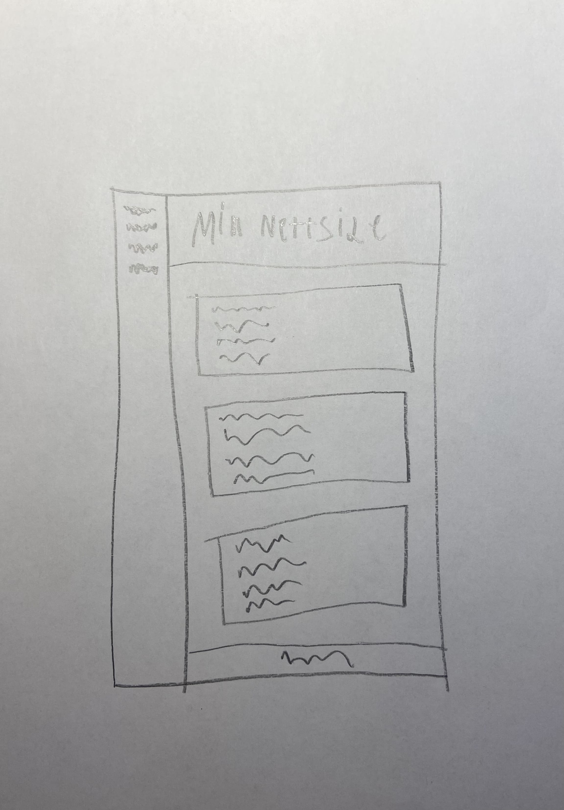

Jeg er Mats Steinstad, jeg går på Amalie Skram IMB1. Jeg er 17 år altså født i 2007.
På fritiden er jeg aktiv innen fotball, løping og spill, samt at jeg liker å gå turer.
Mine interesser inkluderer fotball, volleyball, løping, Formel 1, spilldesign og koding.
Detter er slik er først ville at nettsiden min skulle se ut.
